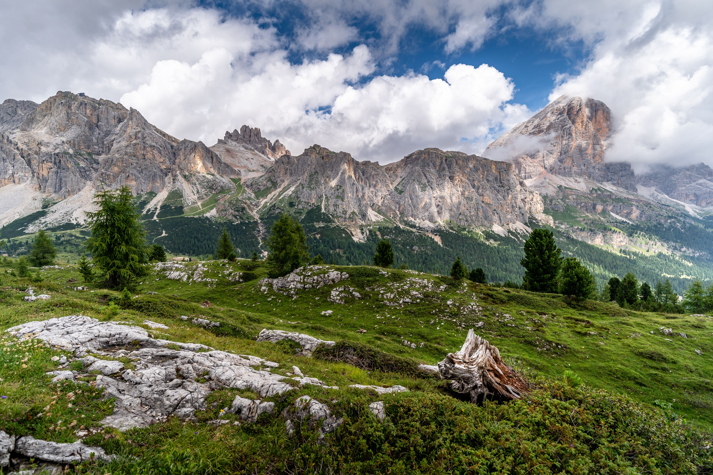

Cammina. Respira. Scopri.
Sentieri è un piccolo sito per chi ama l'escursionismo: itinerari, consigli e ispirazione per le tue prossime giornate in montagna.
Vedi gli itinerari
Chi siamo
Un gruppo di appassionati che condivide le proprie uscite, dalle passeggiate in famiglia alle salite più impegnative. Ogni itinerario è descritto con difficoltà, durata e dislivello.